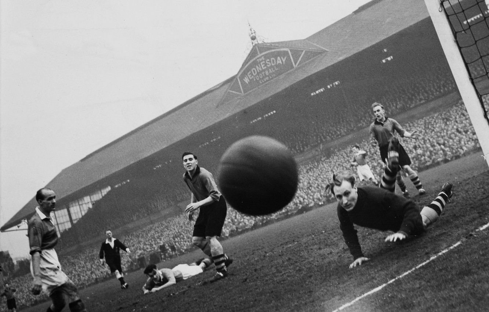

Pomimo znaczących europejskich sukcesów angielskiej piłki nożnej w latach 70. i początku lat 80. XX wieku, po 1985 r. nastąpił poważny kryzys tamtejszego futbolu. Niedoinwestowane od dłuższego czasu stadiony popadały w ruinę, a stałym elementem większości meczów było chuligaństwo. Spowodowało to spadek zainteresowania wszystkimi krajowymi rozgrywkami, a tym samym ich znaczenia dla mediów oraz sponsorów. Dodatkowo, na skutek zamieszek na Heysel, w 1985 r. angielskie klubu dostały 5-letni zakaz gry w europejskich pucharach[3]. Football League First Division, będąca w tym czasie najwyższym szczeblem ligowym w Anglii, znacznie odstawała od czołowych rozgrywek "starego kontynentu", jak Serie A, czy Primera División, zarówno pod względem meczowej frekwencji, jak i przychodów klubów. Z tego powodu kilku czołowych angielskich zawodników przeniosło się do drużyn włoskich oraz hiszpańskich[4]. Nadspodziewanie dobry występ reprezentacji Anglii podczas Mistrzostw Świata 1990 (dojście do półfinału) spowodował ponowny wzrost popularności piłki nożnej w tym kraju. W tym samym roku UEFA zniosła wykluczenie angielskich zespołów z europejskich pucharów. W 1991 r. Manchester United zdobył Puchar Zdobywców Pucharów. Po tragedii na Hillsborough wydano Raport Taylora, który zapoczątkował przebudowę i modernizację obiektów sportowych w Wielkiej Brytanii[5].
Największe angielskie kluby zaczęły przekształcać się w przedsięwzięcia biznesowe, stosując komercyjne zasady działania w celu maksymalizacji zysków. Liderami tej transformacji stali się Martin Edwards z Manchesteru United, Irving Scholar z Tottenhamu Hotspur i David Dein z Arsenalu. Najlepsze kluby starały się zwiększyć swoją władzę i dochody groźbą oderwania się od Football League. Istotne znaczenie zacząły mieć pieniądze z tytułu praw telewizyjnych. Za dwuletnią umowę podpisaną w 1986 r. Football League otrzymało 6,3 milionów funtów z czego kluby otrzymały do podziału połowę. Negocjacje w 1988 r. były prowadzone pod groźbą odejścia dziesięciu klubów i utworzenia „superligi”, ale ostatecznie przekonano je do pozostania – kwota nowego, czteroletniego kontraktu wyniosła 44 miliony funtów, a kluby uzyskały aż 75% z niej[6]. W 1988 r. pierwszy raz spróbowano oddzielić First Division od Football League, jednak się to nie powiodło[7]. Na początku lat 90. duże kluby ponownie rozważały odejście, bowiem musiały sfinansować koszty modernizacji swoich stadionów zgodnie z wytycznymi Raportu Taylora[8].
